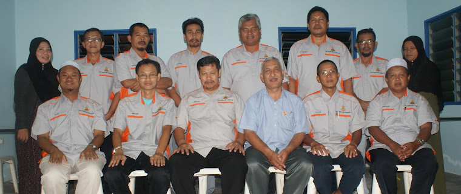

In the past this area was only inhabited by mostly Javanese and Malays. Few Indians and Chinese work as cattle breeders and vegetable growers. Now because the position of this village is strategic where the whole area is surrounded by cities and industrial areas, at this time the population is made up of various races and religions who came to migrate from all over Malaysia. Some also come from neighboring countries such as Indonesia, Bangladesh, and several other countries in the world. The total population is estimated at approximately 15,000 people.
The majority of the population's main jobs are located in the manufacturing sector such as the National Car manufacturing plant, Electronics, Foodstuffs and others. In addition to that, local residents have taken this golden opportunity by building rental houses for rental purposes. This is as a result of the income of the villagers where there are owners who earn up to thousands of ringgit a month. Because this village is located in the central area of the city, there are also many among the residents who are businessmen and also work in the service sector such as Government Offices, Banks and others.